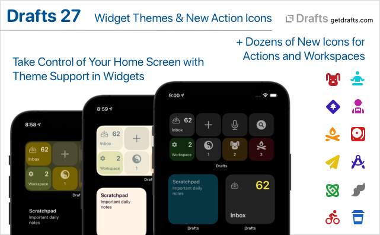
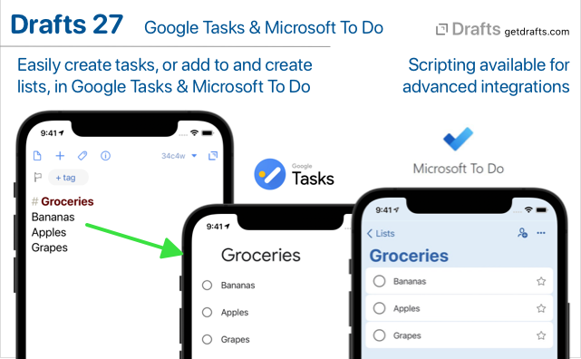

Drafts 27.0 has been released:
Details below. For a complete history of updates, visit:
Custom Theme Support for Widgets + New Action Icons
It is now possible to select custom light and dark themes for Home Screen (iOS) and Notification Center (macOS) widgets from the built-in and custom themes you have installed in Drafts. To make changes, tap and hold on a widget, select “Edit Widget”, and make changes in the widget configuration.

We have also added dozens of new icons for actions/workspaces in categories like Health, Animals, Education, Email, and more.
If you create custom themes, you may wish to add the following new keys in colors.interface: widgetBackground, widgetBackgroundAlternate, widgetForeground, widgetForegroundAlternate. If not present, these values will fall back to existing related keys: background, backgroundCollection, foreground, so existing themes should work out of the box without updates.
Google Tasks and Microsoft To Do Integration
Extensive integration with two of the most popular task managers: Google Tasks and Microsoft To Do. This version adds new action steps which can create individual tasks, or add each line of draft as a task, to lists in either Google Tasks or Microsoft To Do.

Both services are available via scripting, with powerful script objects with convenience methods for creating and updated tasks and lists, while also exposing the full APIs to advanced users.
For sample actions and details:
Arrange Mode Improvements
Arrange mode has better external keyboard support, especially on iOS, including:
- Esc and ⌘-return to cancel or accept changes
- Arrow keys navigate up-down in the list
- ⌘-up/down move the selected line up and down in the list.
Other Updates and Fixes
- Change (iOS): iOS 12 no longer supported.
- Fix (iOS): URL scheme could be called twice on cold start of app.
- Fix: Better support for import of exported files from Drafts 3 or earlier
- Script changes:
-
Eventobject properties:identifier-
attendeesarray to access (readonly) attendee list. -
availabilitystring with valuesbusy,free,tentative,unavailable,notSupported
-
Reminderobject properties:identifier
-
-
Fix: Drafts set in the editor via
editor.loadshould get added to recent drafts list. - Fix (iOS): Messages app background in dark mode had issues.
-
Fix (macOS):
loadActionGroupandloadActionBarURLs were not supported on Mac. - Fix (macOS): Possible fix case where “Undo” would stop working in the editor until the app was restarted.
- Refactor assets to save on binary size.